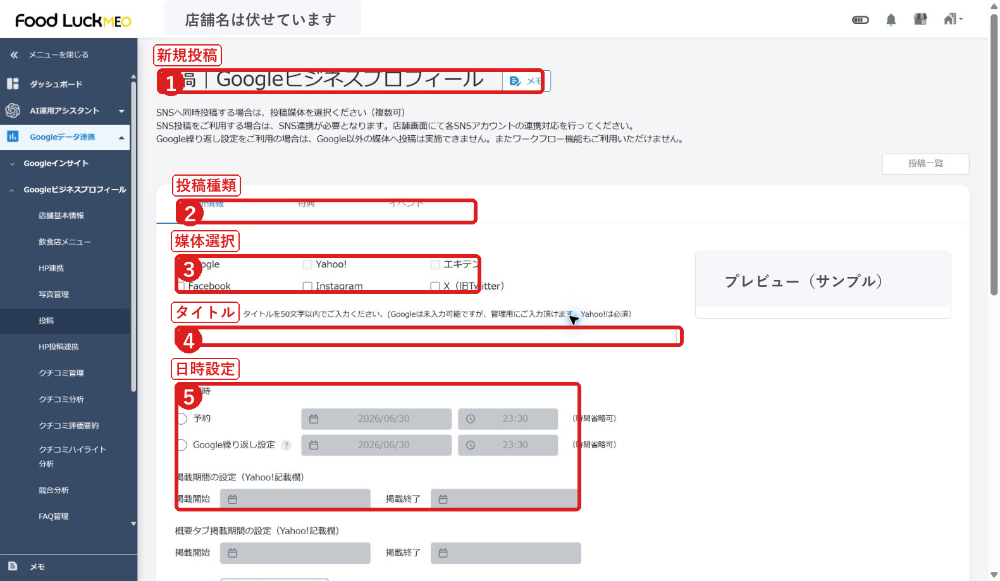
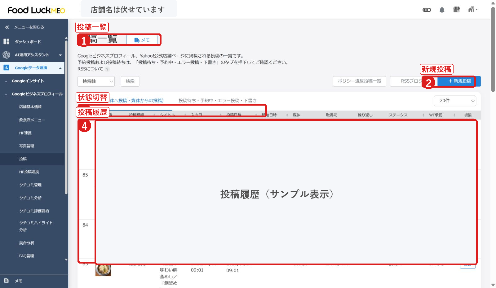
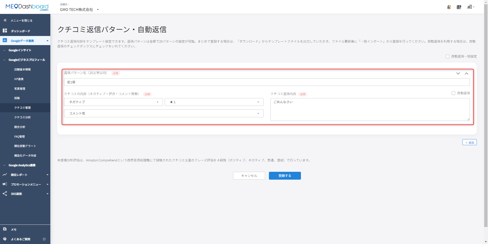
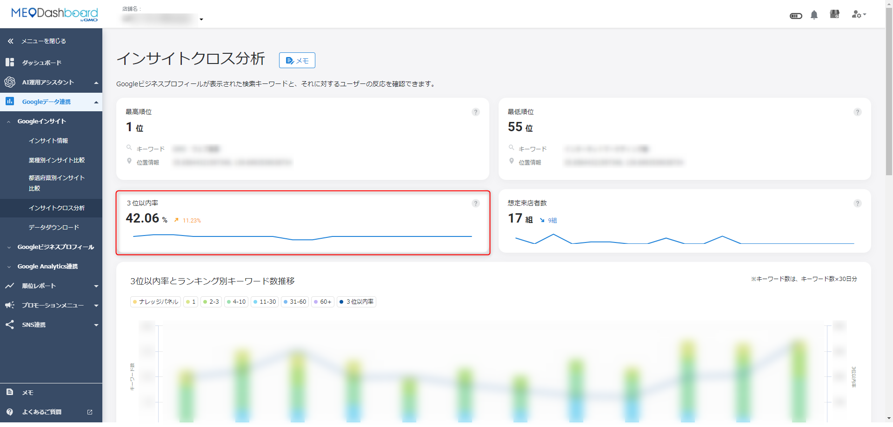
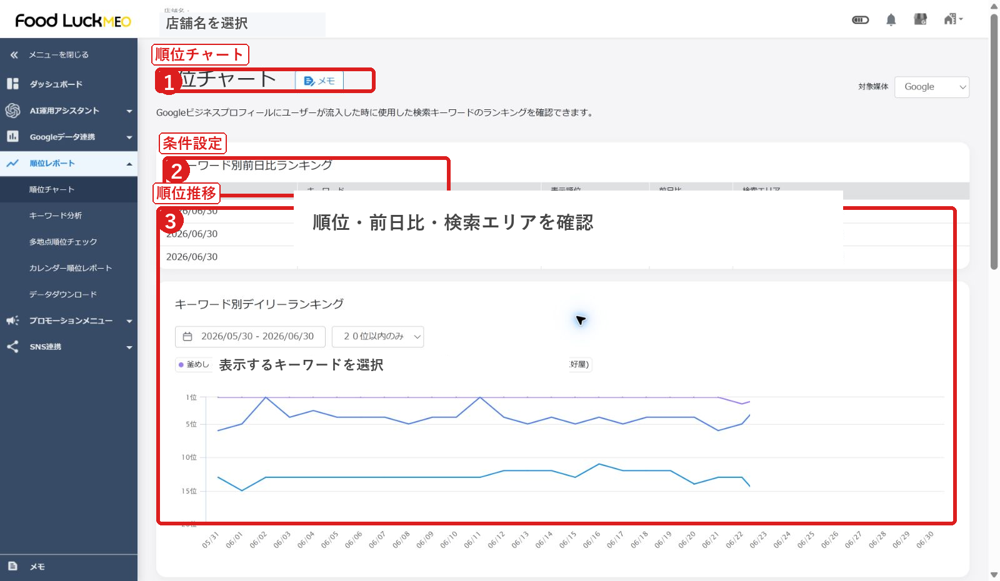

FoodLuck MEO
飲食店向け 運用マニュアル
Google投稿、クチコミ返信、インサイトのクロス分析、順位チャートを使った日々の集客改善
| 毎週 | 随時 | 月1回 | 困った時 |
|---|---|---|---|
| Google投稿 写真追加 未返信クチコミ確認 | クチコミ返信 営業時間・臨時休業確認 | インサイト分析 順位チャート確認 改善テーマ決定 | 投稿エラー 低評価口コミ 数値の急変 |
| この資料の使い方 このマニュアルは、飲食店の現場が日々のFoodLuck MEO運用で使う部分だけを抜き出した実務版です。Google投稿とクチコミ返信は手順を細かく、インサイトと順位は月次改善に使う見方を中心に整理しています。 |
|---|
| 外部反映の注意 投稿、返信、営業時間変更、写真削除などは、お客様がGoogleで見る情報に反映されます。迷う場合は保存・投稿前にFoodLuck側へ確認してください。 |
|---|
1. 日々の運用で見る場所
FoodLuck MEOの日々の運用は、すべての機能を毎日触る必要はありません。飲食店では、まず「投稿」「クチコミ管理」「インサイト」「順位チャート」の4つを押さえれば十分です。
| 画面 | 見る頻度 | 見るもの | 現場で決めること |
|---|---|---|---|
| 投稿 | 週1回以上 | 新規投稿、予約投稿、投稿済み・エラー | 今週見せたいメニュー、イベント、空席、季節商品 |
| クチコミ管理 | 毎日から週2回 | 未返信、低評価、コメント内容 | 返信する、FoodLuckへ相談する、店内改善する |
| インサイト | 月1回 | 閲覧数、アクション数、電話、ルート、Webクリック | お客様が何を見て来店前に動いたか |
| 順位チャート | 月1回 | キーワード別順位、3位以内率、検索エリア | 狙うキーワード、投稿内容、写真・クチコミ強化 |
□ 今週のおすすめメニューやイベントを1つ投稿したか
□ 未返信クチコミが残っていないか
□ 低評価クチコミに感情的な返信をしていないか
□ 電話・ルート・Webクリックなど来店前行動が増減していないか
□ 狙いたい検索キーワードの順位が上がっているか
2. Google投稿の方法
Google投稿は、Google検索やGoogleマップでお店を見たお客様に、今伝えたい情報を届ける機能です。飲食店では、新メニュー、季節メニュー、宴会、ランチ、空席、イベント、テイクアウト、臨時営業などを投稿します。
画面: 新規投稿の基本入力欄

投稿種類、媒体、タイトル、日時設定を確認してから本文・画像へ進みます。
2-1. 投稿する前に決めること
| 決めること | おすすめ | 注意点 |
|---|---|---|
| 投稿目的 | 新メニュー、季節商品、宴会、限定企画、空席案内など1テーマに絞る | 1投稿に複数テーマを詰め込みすぎない |
| 投稿種類 | 通常は「最新情報」。期間がある企画は「イベント」。割引や特典は「特典」 | 投稿種類により入力項目や掲載期間が変わる |
| 画像 | 料理写真、店内写真、メニュー写真など、来店判断につながる写真 | 暗い写真、文字が小さい画像、古い価格入り画像は避ける |
| ボタン | 予約、注文、詳細、電話、Webサイトなど行動につながるURL | URLの間違いは機会損失になるため必ず確認 |
2-2. 新規投稿の手順
STEP 1 左メニューから「Googleビジネスプロフィール」内の「投稿」を開き、「新規投稿」を押します。
STEP 2 投稿種類を選びます。通常のお知らせは「最新情報」、期間がある催事は「イベント」、割引は「特典」を選びます。
STEP 3 媒体選択で「Google」にチェックが入っているか確認します。Yahoo!やSNSにも同時投稿する場合は、媒体ごとの文字数や期間設定に注意します。
STEP 4 タイトル、本文、画像、ボタンURLを入力します。Googleだけならタイトルは必須ではありませんが、管理しやすい名前を入れておくと便利です。
STEP 5 「即時」「予約」「Google繰り返し設定」のいずれかを選びます。予約投稿は日時を必ず確認します。
STEP 6 プレビューを確認し、誤字、価格、曜日、リンク、画像を見直します。
STEP 7 問題なければ投稿します。投稿後は投稿一覧で「投稿済み」「投稿待ち」「エラー」などの状態を確認します。
画面: 投稿一覧で状態を確認

投稿済み、投稿待ち、予約中、エラー、下書きなどを確認します。
2-3. 飲食店で使いやすい投稿ネタ
| 投稿ネタ | 本文に入れる要素 | 行動ボタン |
|---|---|---|
| 季節メニュー | 料理名、こだわり、提供期間、数量限定の有無 | 詳細、予約 |
| 宴会・コース | 人数、価格、飲み放題、予約期限、個室有無 | 予約 |
| ランチ・昼営業 | 人気メニュー、価格、提供時間、混雑しやすい時間 | 詳細、電話 |
| テイクアウト | 商品名、受け取り時間、注文方法 | 注文、電話 |
| 臨時営業・休業 | 日付、理由、代替営業日、通常営業再開日 | 詳細 |
| 投稿文のコツ お客様は細かい説明よりも「何が食べられるか」「いつ行けるか」「予約できるか」を見ています。本文は短く、写真は料理や席の魅力が一目で伝わるものを使います。 |
|---|
2-4. 投稿後に確認すること
□ 投稿一覧でエラーになっていないか
□ 予約投稿の日時が正しいか
□ Google上で画像が切れて見えないか
□ URLボタンが正しいページに飛ぶか
□ 終了したイベントや古い価格の投稿が残っていないか
3. 口コミ返信の方法
口コミ返信は、口コミを書いたお客様だけでなく、これから来店するお客様にも見られます。返信は評価を上げるためだけでなく、お店の姿勢を伝える接客の延長です。
画面: クチコミ管理一覧

すべて、返信済み、未返信を切り替え、未返信から優先して確認します。
3-1. 返信前に確認すること
□ 評価点だけで判断せず、コメント本文を読む
□ 実際の来店内容、日付、スタッフ対応、料理名などが分かるか確認する
□ クレーム内容が事実確認を必要とする場合は、返信前に店内で共有する
□ 個人情報、予約内容、スタッフの実名などを返信に書かない
□ 低評価に感情的な言葉で返さない
3-2. 個別口コミに返信する手順
STEP 1 左メニューから「クチコミ管理」を開きます。
STEP 2 「未返信」を選び、返信が必要な口コミを開きます。
STEP 3 評価点、コメント、投稿日、感情分析を確認します。
STEP 4 返信文を入力します。返信パターンやAI返信を使う場合も、そのまま送らず店舗の言葉に整えます。
STEP 5 内容に問題がないか確認し、返信を送信します。
STEP 6 一覧に戻り、返信状態が「済」になっているか確認します。
画面: 返信パターン・自動返信

返信パターンや自動返信は便利ですが、低評価や個別事情のある口コミは人が確認します。
3-3. 返信文の基本型
| 場面 | 返信の考え方 |
|---|---|
| 高評価 | 来店へのお礼、褒めてもらった点への反応、また来たいと思える一言を入れます。 |
| 星だけ・コメントなし | 評価へのお礼を短く返し、次回来店への言葉で締めます。 |
| 低評価・不満 | まず不快な思いへのお詫び、事実確認、改善姿勢を伝えます。反論から入らないことが大切です。 |
| 事実と違う内容 | 断定や攻撃を避け、確認できる範囲で丁寧に説明し、必要なら直接連絡をお願いする形にします。 |
| 悪質・違反の疑い | 感情的に返信せず、削除申請やFoodLuck側への相談を検討します。 |
| 低評価返信の基本 低評価の返信は、お客様を論破する場所ではありません。これから見るお客様に「この店は誠実に対応してくれる」と伝わる返信にします。 |
|---|
3-4. 返信文の例
| 口コミ内容 | 返信例 |
|---|---|
| 料理がおいしかった、また行きたい | ご来店いただきありがとうございます。料理を楽しんでいただけたとのこと、大変励みになります。次回も気持ちよくお過ごしいただけるよう、スタッフ一同準備してお待ちしております。 |
| 提供が遅かった | この度はお料理の提供までお待たせしてしまい、申し訳ございませんでした。混雑時のご案内と提供確認を見直し、より安心してお食事いただけるよう改善してまいります。貴重なお声をありがとうございます。 |
| コメントなしの星評価 | この度は評価をいただきありがとうございます。今後もご満足いただける料理と接客を提供できるよう努めてまいります。またのご来店をお待ちしております。 |
4. インサイトのクロス分析
インサイトは「Googleで見られた数」と「その後にお客様が行動した数」を見る画面です。クロス分析では、検索キーワードや順位と行動数を合わせて見て、どの集客導線を伸ばすべきか判断します。
画面: インサイト情報

期間と媒体を選び、閲覧ユーザー数、アクション数、アクション率を確認します。
画面: インサイトクロス分析

検索キーワードとユーザー行動のつながりを見て、投稿や写真の改善テーマを決めます。
4-1. まず見る3つの数字
| 指標 | 意味 | 飲食店での判断 |
|---|---|---|
| 閲覧ユーザー数 | Google検索やGoogleマップで店舗情報を見た人数 | 露出が増えているか。投稿・写真・順位の影響を見る |
| アクション数 | 電話、ルート、Webクリック、予約などの行動数 | 見た人が来店前行動を起こしているか |
| アクション率 | 閲覧した人のうち、どれだけ行動したか | 情報は見られているのに行動されない原因を探る |
4-2. クロス分析の見方
STEP 1 期間を1か月に設定します。月次で比較する場合は、前月と同じ日数で見ます。
STEP 2 閲覧ユーザー数が増えているかを確認します。増えていれば、Google上で見つけられる機会が増えています。
STEP 3 アクション数の内訳を見ます。飲食店では「電話」「ルート」「Webクリック」「予約」を特に見ます。
STEP 4 検索キーワードや順位と照らし合わせます。狙ったキーワードで見られているか、来店行動につながっているかを確認します。
STEP 5 アクション率が低い場合は、写真、メニュー、営業時間、予約リンク、投稿内容を見直します。
4-3. 数字から考える改善例
| 数字の状態 | 考えられること | 次にやること |
|---|---|---|
| 閲覧数は増えたが電話が少ない | 情報は見られているが、問い合わせ理由が弱い | 宴会、空席、予約導線を投稿で強化 |
| ルートが多い | 来店意思のあるお客様が多い | 外観写真、駐車場、入口案内、営業時間を整える |
| Webクリックが多い | 詳しい情報を見たいお客様が多い | 公式サイト・メニュー・予約ページを最新化 |
| 閲覧数も行動数も下がった | 露出、投稿頻度、写真、順位に課題の可能性 | 投稿再開、写真追加、順位チャート確認 |
| アクション率が低い | 見られているが選ばれていない | カバー写真、口コミ返信、メニュー写真、価格表示を見直す |
5. 順位チャートの見方
順位チャートは、お客様がGoogleで検索した時に、お店がどのくらい上位に表示されているかを見る画面です。順位そのものだけでなく、どのキーワードで上がったか、どのエリアで弱いかを見て改善に使います。
画面: 順位チャート

検索キーワード別の順位、前日比、検索エリア、順位推移を確認します。
画面: 3位以内率とキーワード別推移

3位以内率は、見つけられやすさを見る重要な目安です。
5-1. 順位チャートで見る項目
| 項目 | 意味 | 見方 |
|---|---|---|
| 順位 | 指定キーワードで検索した時の表示順位 | 1位から3位は特に見られやすい |
| 前日比 | 前日から上がったか下がったか | 短期の上下に一喜一憂せず、1か月の流れで見る |
| 3位以内率 | 登録キーワードのうち3位以内に入っている割合 | 地域で選ばれやすい状態かを見る |
| 検索エリア | どの地点から検索した想定か | 駅前、商圏、競合近くなどで差が出る |
| キーワード別推移 | キーワードごとの順位変化 | 投稿・写真・口コミの改善結果を見る |
5-2. 順位を改善に使う手順
STEP 1 月初に前月1か月分の順位推移を見ます。
STEP 2 上がったキーワードと下がったキーワードを分けます。
STEP 3 上がったキーワードに関係する投稿、写真、口コミが増えていたか確認します。
STEP 4 下がったキーワードは、競合の投稿、写真、口コミ数、メニュー訴求を確認します。
STEP 5 翌月の投稿テーマと写真追加テーマを決めます。
5-3. 飲食店でよく見るキーワード例
| キーワード型 | 例 | 改善する内容 |
|---|---|---|
| 業態 | 居酒屋、焼肉、ラーメン、カフェ | 店舗基本情報、カテゴリ、写真、口コミ |
| 利用シーン | ランチ、宴会、個室、デート、子連れ | 投稿、写真、メニュー、属性 |
| 地域 | 駅名 + 業態、町名 + ランチ | 商圏ごとの順位、多地点順位 |
| 商品 | 刺身、肉寿司、担々麺、パフェ | メニュー写真、投稿、口コミでの言及 |
6. 月1回の改善ミーティングで見る順番
FoodLuck MEOは、数値を見るだけでは成果につながりません。投稿、クチコミ、インサイト、順位をつなげて見て、翌月に何を変えるかを決めます。
| 順番 | 見る画面 | 確認すること | 翌月のアクション |
|---|---|---|---|
| 1 | 投稿 | 投稿頻度、投稿内容、エラー、予約投稿 | 週1投稿のテーマを決める |
| 2 | クチコミ管理 | 未返信、低評価、褒められた内容 | 返信完了、店内改善、投稿ネタ化 |
| 3 | インサイト | 閲覧数、電話、ルート、Webクリック、予約 | 導線の弱い部分を直す |
| 4 | 順位チャート | 上がった・下がったキーワード、3位以内率 | 狙うキーワードと写真・投稿を決める |
| 現場で大事な考え方 順位だけ、口コミだけ、投稿だけを単独で見ると判断を間違えます。例えば順位が上がっても電話やルートが増えていなければ、写真や予約導線に課題があるかもしれません。数字は原因探しの入口として使い、最後はお客様が来店しやすくなる改善に落とし込みます。 |
|---|
□ 翌月の投稿テーマを4本決めた
□ 返信が必要なクチコミを残していない
□ 低評価口コミから店内改善のテーマを1つ決めた
□ インサイトで伸ばしたい行動を1つ決めた
□ 順位を上げたいキーワードを1から3個に絞った
7. 迷った時の早見表
| 状況 | まず見る場所 | 対応 |
|---|---|---|
| 投稿したのに反映されない | 投稿一覧の状態、エラー表示 | 画像・本文・URL・媒体選択を確認。原因不明ならFoodLuckへ相談 |
| 予約投稿が出ない | 投稿日時、投稿待ち状態 | 日付と時刻、タイムゾーン、予約中ステータスを確認 |
| 口コミが増えた | クチコミ管理の未返信 | 24から72時間以内を目安に返信 |
| 低評価が入った | 口コミ本文、来店状況、返信履歴 | 店内確認後、謝意と改善姿勢を返信。感情的に返さない |
| 閲覧数が下がった | インサイト、順位チャート、投稿頻度 | 投稿再開、写真追加、順位低下キーワードを確認 |
| 順位が下がった | 順位チャート、キーワード別推移 | 競合・口コミ・投稿・写真を確認し、翌月テーマを修正 |